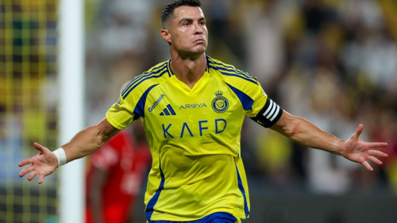

Cristiano Ronaldo

Народився 5 лютого 1985,Фуншал, Мадейра, Португалія
португальський футболіст, нападник та капітан саудівського клубу «Аль-Наср» і збірної Португалії.
Один з найкращих футболістів в історії футболу.
2021 року «Globe Soccer Awards» (ОАЕ) назвали Роналду найкращим гравцем XXI століття[6].
Перший у світі футболіст-мільярдер (2020)
Спортивна кар'єра
П'ятиразовий володар Золотого м'яча (2-й показник в історії): 2008, 2013, 2014, 2016 та 2017.
Чотириразовий володар Золотого бутса УЄФА (2-й показник історії): 2008, 2011, 2014 та 2015.
Рекордсмен збірної Португалії за кількістю ігор і забитих голів.
Переможець Євро-2016 у складі збірної Португалії. Фіналіст Євро-2004 у складі збірної Португалії.
Визнаний найкращим молодим гравцем чемпіонату Європи 2004 року.
Переможець Ліги чемпіонів сезонів 2007/08, 2013/14, 2015/16, 2016/17 та 2017/18.
Найкращий бомбардир в історії Ліги чемпіонів.
1995 року Роналду підписав контракт з клубом «Насіунал».
За результатами сезону Кріштіану отримав запрошення на перегляд у лісабонський «Спортінг», після чого клуб з португальської столиці підписав з ним контракт.
Роналду став єдиним гравцем «Спортінга», який грав за юнацькі команди клубу до шістнадцяти, до сімнадцяти, до вісімнадцяти років, дублі «Спортінга» й основну команду за один сезон.
У 16 років футболістом зацікавився тренер «Ліверпуля» Жерар Ульє (Gerard Houllier), але клуб відмовився взяти Роналду, вирішивши, що португальцеві спершу слід розвинути свої футбольні навички.
Влітку «Спортінг» зустрічався з «Манчестер Юнайтед».
Вже після першого тайму здивовані грою Роналду гравці вмовили Фергюсона викупити Роналду.
У тому матчі «Спортинг» переміг «Манчестер Юнайтед».[8]